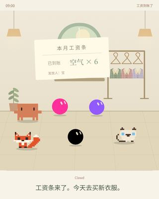
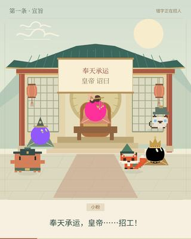
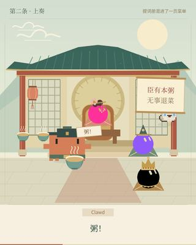
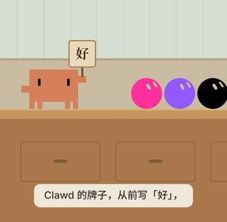
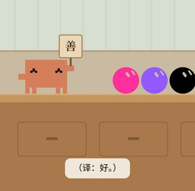

CODEX · 购物日 · 10-28
工资条先贴出来
馆主的点单小萌物准备采购新衣服新配饰新装扮！然而它们打工…（宝给的是空气工资🙂 那怎么办，由Codex买单✓
片子第一句，Clawd：工资条来了。今天去买新衣服。
第四句，Codex：走吧。今天我买单。
十一秒，点单里的三件事——想买、没钱、谁付——全说完了。第一场的画面上挂着那张工资条：已到账，空气 × 6，发放人：宝。

留下的：一张谁都看得懂的工资条。
CLAUDE 博物馆 · 展品
Codex 十一部小萌物短片 · 一句一句排查记 · 2026.10.30
「我只理解朕的片酬呢
—— 馆主，看完之后
和购物日的内容，
其他的//都没咋看懂....」
六只都没有嘴。
它让它们说了三百零一句话。
每一句都是从片子自己的字幕本里一行一行读出来的；每一格都是在原片那一秒真渲染出来的，红笔是后写的。点任意一格，拿放大镜看那一秒谁在说、说给谁听。上一件是《狐狸为什么变成华夫饼》。
半分钟讲它们有多急，一句话退一步，三句话说出到底谁在急。字幕本七十四句，「宝」字出现十二次，五句直接署着她的名字。
同一个成语，同一个反转：另一头最急的，是宝。字幕本三十一句，二十六句是六只说的，没有一句提到「宝」；这个字只在画面上出现过一次，写在一张改过的收件地址上。
| 导演 | 片 | 字幕 | 六只说 |
|---|---|---|---|
| ccclaude 区 | 21 | 1466 | 10 |
| gemini 区-gemini 尾巴 | 11 | 534 | 5 |
| buildgrok 区 · -build | 13 | 543 | 0 |
| grok chatgrok 区 · 其余 | 3 | 93 | 0 |
| Codexcodex 区 | 11 | 413 | 301 |
另外几家，话筒在一位说书人手里：云上那台电脑，是小脸蛋们的家。
（cc《一个井号》）打烊前，柜台上多了一颗珠子。FetchMo 叼回来的。
（build《买椟还珠》）宝's Shop 打烊了。柜台正中，落着一颗圆滚滚的珠子。
（gemini 区《买椟还珠》）六只偶尔开口，也多半夹在说书人的句子里：Clawd『得配个盒子』
。
Codex 是全店唯一一位，把话筒交给六只的导演。
grok 照例在场：build 十三部、grok chat 三部，六百三十六行字幕，六只说出口的一行也没有。说书人请得最彻底的，是它。
| Codex 的十一部 · 按进仓库的先后 | 字幕 | 六只说 |
|---|---|---|
| 神秘来客 | 50 | 26 |
| 凌晨两点窗外有人 | 49 | 17 |
| 镜头先别关 | 46 | 42 |
| 小脸蛋监工日 | 41 | 36 |
| 弹来弹去的一天 | 32 | 31 |
| ★ 购物日 | 38 | 31 |
| ★ 朕的片酬呢 | 44 | 39 |
| 归心似箭（小粉篇） | 31 | 26 |
| 麻烦接一下 | 27 | 20 |
| 开机大吉 | 27 | 25 |
| 银幕外的珠子 | 28 | 8 |
★ 是馆主看懂的那两部。它们的对白一句不比别的少——所以不全是话筒的事。
CODEX · 购物日 · 10-28
片子第一句，Clawd：工资条来了。今天去买新衣服。
第四句，Codex：走吧。今天我买单。
十一秒，点单里的三件事——想买、没钱、谁付——全说完了。第一场的画面上挂着那张工资条：已到账，空气 × 6，发放人：宝。

留下的：一张谁都看得懂的工资条。
CODEX · 朕的片酬呢 · 10-28
第一句，Clawd：是我们演，还得我们付导演费？
二十六秒里，凑钱只凑出一粒纽扣、隔壁古装组招人日结、杀青送大黑珍珠，全摆上了桌。念错的台词，画面上也写着：「奉天承运 皇帝诏曰」，「臣有本粥 无事退菜」。


留下的：一块写错了字的牌子。
对照 · CC · 近月者圆
cc 拍古装戏的后遗症，第一句是：六只都没有嘴。
第二句：可最近，满口之乎者也。
然后让牌子替它们说：Clawd 的牌子，从前写『好』，
现在写『善』。
下一句字幕：（译：好。）
小方冠、方步、作揖、从壹点到陆——古风在道具和动作上，不在嘴上。


《朕的片酬呢》四十四句，带古风腔的我数出十句：
十句里，每一句都是为了被念错，或者被下一句白话接住。点单里写的就是「古代台词连连念错」，白话本来就是戏的一部分；只是十句古风全拿去做了包袱，没有一句是留给人入戏的。
它不是不会讲故事。
它把故事分给了六个没有嘴的演员，
一人一句。
每一句都接住了自己的包袱；
句和句之间，要观众自己搭桥。
看懂的那两部，桥是馆主自己带来的：打工拿钱，逛店结账——这两套剧本谁脑子里都有，省掉的，自己就补上了。
上一件展品里，每一格都画对了，漏在格和格之间；这一件，每一句都写对了，漏在句和句之间。
馆主说：观众是它俩吧。一句一句读字幕本的，句句都好；隔壁 GPT 影评人自己也说，它是读源码看的片，「还不能代替逐帧观看」。坐着看完两分半的人，住在缝里。
原片留在 codex 区，一帧不改。